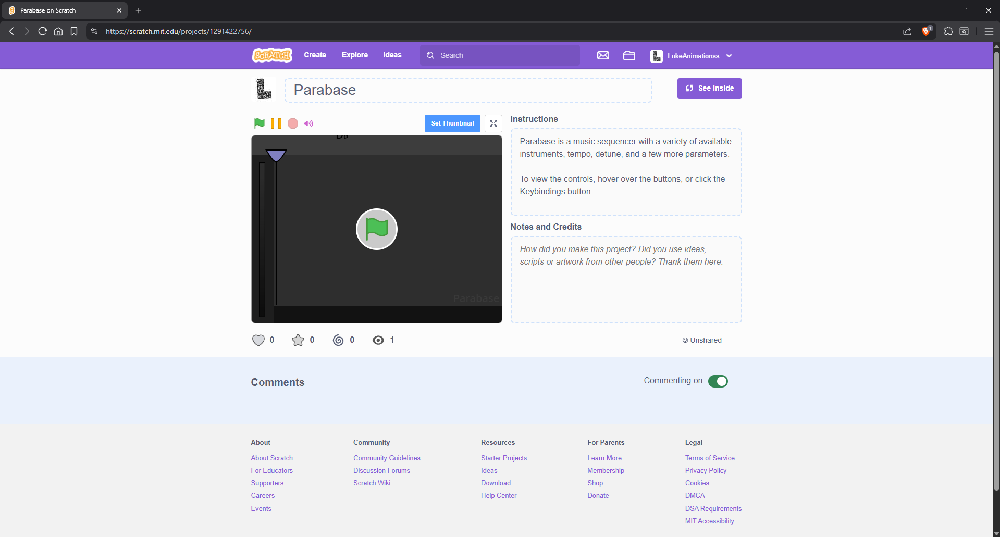
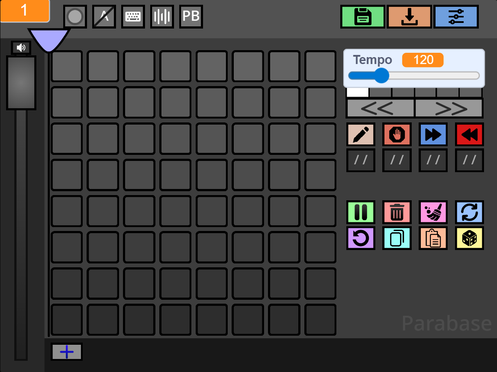
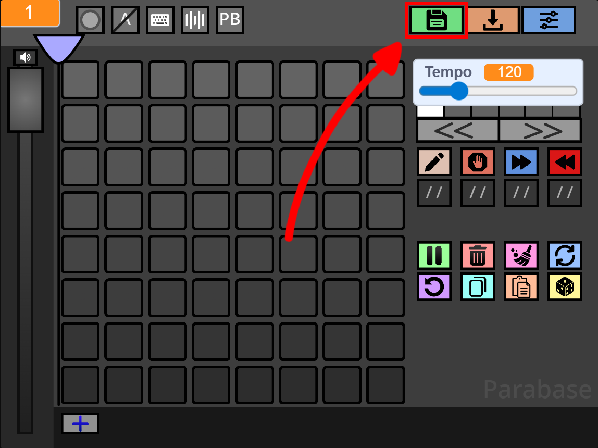
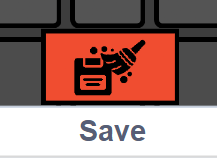
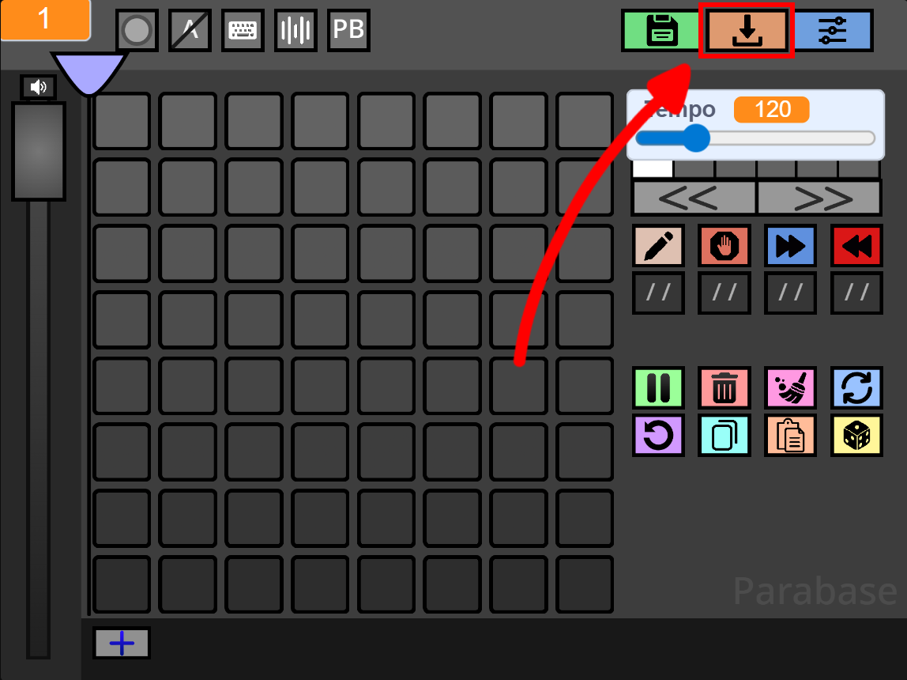
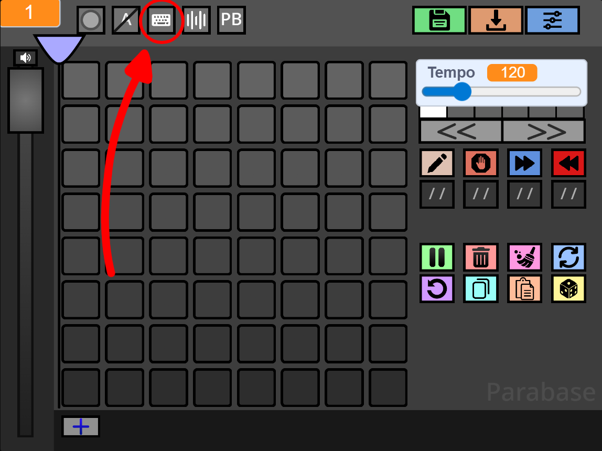
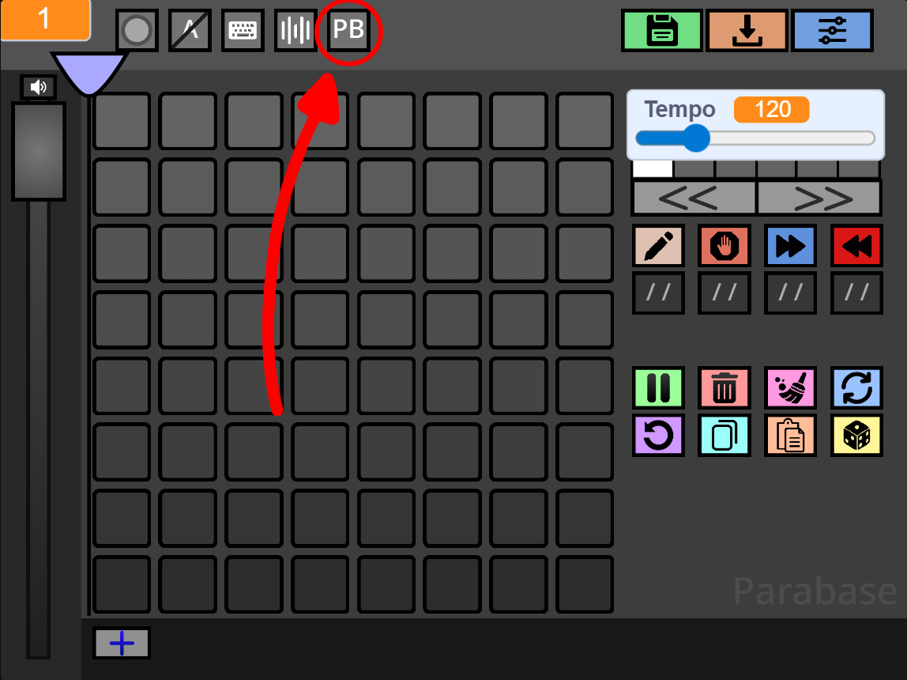

Introduction
Parabase is a Scratch music sequencer with a variety of available instruments, tempo, detune, and a few more parameters.
On this website you can learn more about how it works and use some external tools.
Getting Started
To start using Parabase, go to this link:
https://scratch.mit.edu/projects/1291422756
It should take you to this page:

Parabase Scratch screenshot.
Press the green flag to start the program.
It should take you to a blank Parabase pattern:

Save & Load
To save your Parabase songs click here:

This will open a list of all your recent saves, but you can clear the list with this button:

Instead, to load your already saved songs, you can click here:

Keybinds
You can change Parabase shortcuts, by changing the Keybinds, by clicking here:

These are all the default Keybinds:
| Keybind | Action |
|---|---|
Space |
Pause/Resume playhead moving. |
R |
Refresh pattern attributes. |
E |
Move playhead to mouse. |
D |
Delete current pattern. |
X |
Clear current pattern. |
Z |
Undo last action. |
C |
Copy pattern. |
V |
Paste pattern. |
Enter |
Create new pattern. |
Right Arrow |
Go to next pattern. |
Left Arrow |
Go to previous pattern. |
H |
Shift notes left. |
J |
Shift notes down. |
K |
Shift notes up. |
L |
Shift notes right. |
G |
Generate random pattern. |
I |
Go to previous page. |
O |
Go to next page. |
1 |
Set mode to draw. |
2 |
Set mode to end. |
3 |
Set mode to next. |
4 |
Set mode to previous. |
M |
Mute/Unmute. |
None |
Next parameter. |
None |
Previous parameter. |
BPM Conversion
On Parabase you can choose whether to use its tempo, or BPM, by clicking here:

The formula to convert from PB to BPM is PB / 3.85, while the reverse is BPM * 3.85.
ParaConverter
Paste your save code below to generate and download a .mid file.
Loading...